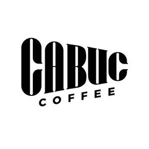

Trade Mark Journal No.2025/041 10 October 2025
UK00004269599 25 September 2025 (30,35,43)

- Class 30
- Coffee; Cocoa; Cocoa-based beverages; Chocolate-based beverages; Dried and fresh pastas, noodles and dumplings; Pastries; Bakery goods; Prepared desserts [confectionery]; Bread; Bagels; Pita bread; Sandwiches; Cakes; Baklava; Prepared desserts [pastries]; Puddings; Custard; Honey; Royal jelly; Propolis [bee glue] for human consumption; Condiments; Flavourings for foods; Vanilla; Spices; Sauces [condiments]; Tomato sauce; Yeast; Baking powder; Flour; Semolina; Processed grains, starches, and goods made thereof, baking preparations and yeasts; Sugar; Iced tea; Tea; Confectionery; Chocolates; Biscuits; Crackers; Wafers; Chewing gum, not for medical purposes; Ice cream; Edible ices; Salt; Cereal-based snack food; Popcorn; Oatmeal; Corn chips; Processed corn; Cereal breakfast foods; Processed wheat; Barley for use as a coffee substitute; Ground barley; Oats for human consumption; Rice; Molasses for food; Rye flour; Starch for food; Dairy confectionery.
- Class 35
- Advertising and marketing services; Public relations; Organisation of exhibitions and trade fairs for commercial or advertising purposes; Design of advertising materials; Provision of an online marketplace for buyers and sellers of goods and services; Office administration services [for others]; Secretarial services; Newspaper subscriptions; Compilation of statistics; Rental of office machines and equipment; Systematization of data in computer databases; Telephone answering [for others]; Business management and administration; Assistance, advisory services and consultancy with regard to business management; Accounting consultation; Personnel placement and recruitment; Personnel selection [for others]; Import-export agency services; Temporary assignment of personnel; Arranging and conducting auctions; Retail services in relation to bakery products; Retail services in relation to chocolate; Retail services in relation to cocoa; Retail services in relation to coffee; Retail services in relation to confectionery; Retail services in relation to desserts; Retail services in relation to foodstuffs; Retail services in relation to ice creams; Retail services in relation to non-alcoholic beverages; Retail services in relation to teas; Retail services relating to candy; Retail services relating to delicatessen products; Business assistance, management and administrative services; Administrative services relating to customs clearance; Wholesale services in relation to foodstuffs; Wholesale services in relation to non-alcoholic beverages; Administrative processing of purchase orders.
- Class 43
- Provision of temporary accommodation; Booking services for accommodation; Provision of conference, exhibition and meeting facilities; Provision of facilities for conventions; Day nursery services; Boarding for animals; Food and drink preparation services; Provision of food and drink; Rental of rooms for social functions.
CABUC GIDA SANAYI TICARET LIMITED SIRKETI
Representative: Trama Legal s.r.o.